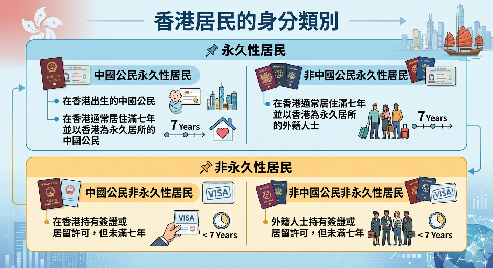

核心導讀：《基本法》是香港特區的憲制性文件，明確規定香港居民的權利和義務，並確保法治原則在香港得以落實。
二、《基本法》規定的香港居民的基本權利和義務
1) 香港居民的界定
- 香港居民分為永久性居民和非永久性居民。
- 永久性居民享有《基本法》規定的全部權利；非永久性居民則享有部分權利（如不享有選舉權和被選舉權）。

2) 香港居民的基本權利和義務
2.1) 香港居民的基本權利（5大範疇）
- 人身自由 —— 人身自由不受侵犯、不受任意或非法逮捕
- 公民及政治 —— 選舉權、被選舉權、言論自由、新聞自由、集會自由、結社自由
- 經濟及社會 —— 私有財產權、社會福利權、勞工權益
- 宗教及文化 —— 宗教信仰自由、學術研究自由
- 其他 —— 訴訟權、出入境自由等
2.2) 國際人權公約的保障
- 《基本法》規定，《公民權利和政治權利國際公約》、《經濟、社會與文化權利的國際公約》適用於香港的有關條文繼續有效。
- 這些國際人權公約透過香港本地立法實施，保障香港居民的基本權利。
2.3) 對權利和自由的限制
- 權利和自由並非絕對，法律可基於保障公共秩序、公共安全、公共衞生、他人權利等理由作出合理限制。
- 例如：疫情期間的限聚令、出入境限制等。
2.4) 香港居民的義務（3大範疇）
- A 遵守香港法律 —— 所有香港居民均須遵守香港的法律
- B 尊重他人權利 —— 行使自己權利的同時，不得侵犯他人的權利
- C 履行其他義務 —— 如納稅、陪審團義務等
3) 《基本法》與法治原則
法治是香港重要的核心價值。《基本法》確保了香港的法治原則，為居民的權利和義務提供憲制保障。